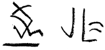
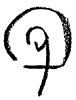

Brief commentary, new slants, current scholarly finds are invited for our Alerts section. Poets and scholars are equally welcome to comment.
Selected Bibliography: Trinh T. Minh-ha
New Ground: A Response to Trinh T. Minh-ha's Film/Text, Naked Spaces--Living Is Round, by Bonnie Sparling
"but silence is the ground," Cixous on Lispector

New Ground:
Naked Spaces--Living Is Round
open(s to) sight sound earth body identity difference : the production of knowledge (Thought/Dwelling) theory text culture. The text represents a series;
Naked Spaces
is voices brought to mind. Film - Book : the objects around me fold in two when told by one. Which place? Whose voice? East African West. One field and green spear or underfoot and ground, a bringing (forth/down) of voices, sun and thought patternings (to dwell); painted thoughts of how much life connecting inner and outer spaces (what (is) suffering, for instance) by land. What makes the heart sing: and the spinning of (a) yarn? "The bobbin, which is wound off in spinning, is the sun rolling in space." (NS) I remember ((in) a circle of) elements. An echo forms: with all that matter is, and all that matters. I paint the Earth (and) Land on it. I think of faults and fault lines. Write the body life : Pense/Response--on what grounds? Trinh T. Minh-ha tells stories that shift. "You ask me : 'what is the use of these paintings?' They help the plants to grow / They promote germination." (NS) The shifting (of) voices without grounding of voices is set against the visual covering grounds of African living. Chasms of interpretation arise. Connections charm. Between the represented (chosen) dwellings & thoughts ("on what grounds": patterns of belief ), and perhaps as well between film & viewer in the reception/construction of the text.
Bonnie Sparling is a visual and performance artist, teaching and working in Iowa City. Current works are inspired by wind and current, video, film, and hair.  "but silence is the ground"
The question of silence, for example, is the silence in the spacing of music, but silence is the ground, the earth itself, where there is soil for the plant and where there is a surging of the plant from the ground. It is silence itself which becomes the ground for verbalization. When she throws her voice up into the air--there is always something very corporeal that is being described--and at the same time the words are taken from silence as matter, silence is matter. . . . But to speak becomes another story: to speak is the great battle with language; it is to speak in spite of language; to speak though language has
already said
everything . . . [Clarice Lispector's] endeavor consists of speaking in such a way that what is normally condemned to mutism comes into expression.
Cixous translated by Verena Conley; Lispector by Elizabeth Lowe and Earl Fitz. go to this issue's table of contents
 -- the Editors
-- the Editors


 SELECTED BIBLIOGRAPHY: TRINH T. MINH-HA
SELECTED BIBLIOGRAPHY: TRINH T. MINH-HA


Books:
Woman, Native, Other
(Writing Postcoloniality and Feminism). Indiana University Press, 1989.
En miniscules.
Paris: Le Méridien Editeur, 1987. A book of poems.
Un Art Sans Oeuvre.
Troy, Michigan: International Book Publishers, 1981. "On the convergence of Eastern and Western thinking in contemporary arts."
African Spaces. Designs for Living in Upper Volta.
In collaboration with Jean-Paul Bourdier. New York, London: Holmes & Meier, 1985. Anthropological and architectural study of traditional dwellings.
Out There. Marginalisation in Contemporary Culture.
Co-editor with Cornel West, Russell Ferguson and Martha Gever. New York: New Museum of Contemporary Art and M.I.T. Press, forthcoming, 1990.
She, The Inappropriate/d Other.
Editor of issue No. 8 of the journal
Discourse
(Winter 1986-87) on postcolonial women as writing and written subjects.
(Un)Naming Cultures.
Editor of issue No. 11.2 of Discourse (Spring-Summer 1989) on ethnography and the politics of representation.
Articles:
"The World as Foreign Land,"
High Culture/Popular Culture:
Media Representation of the Other,
ed. John Hanhardt & Steven Lavine, forthcoming.
"All-Owning Spectatorship,"
Quarterly Review of Film & Video, Special Issue on the Discourse of the Other, ed. H. Naficy, Spring, 1990.
"Difference: A Special Third World Women Issue" (reprinted) in Feminist Knowledge as Critique and Construct--A Reader,
ed. Sneja Gunew, London: Routledge, 1989.
"Wo/Man/Third/World,"
Woman and Language,
Fall, 1989.
"Not You/Like You,"
Inscription
(group for Critical Study of Colonial Discourse), No. 3, 1988.
"Questions of Subjectivity and Objectivity in Documentary,"
Aperture,
Issue 113/ The World's Reality. 1988 Esalen Symposium.
Films:
Surname Viet Given Name Nam.
1989. "Feature-length (108 mins) film evolves around questions of identity, popular memory and culture."
Naked Spaces--Living Is Round.
1985. "A feature film (2 hrs 15 mins) on the poetics of space--women, houses, cosmos--in West Africa."
Reassemblage.
1982. A 40-minute color film on women of rural Senegal. "Reflections on documentary filmmaking and critique of the anthropological eye."
Filmscripts:

for
Naked Spaces--Living Is Round. Cinematograph 3,
1988.
for
Reassemblage, Camera Obscura,
Nos. 13/14, 1985.
Interviews:
Stephen Kearny, "For Filmmaker and Teacher Trinh T. Minh-ha, Curiosity and Sensitivity Come First,"
Film/ Tape World,
Vol 2 No 8 (20) Sept 89, 13.
Harriet Hirshorn, "Interview with Trinh T. Minh-ha,"
Heresies
(Feminist Publication on Art and Politics) No 12 (Fall/Winter 1987-88), 14-17.
Constance Penley & Andrew Ross, Camera Obscura,
Journal of Feminism and Film Theory, Nos 13/14 (1985), 87-103.

A RESPONSE TO TRINH T. MINH-HA'S FILM/ TEXT,
NAKED SPACES--LIVING IS ROUND
 --Bonnie Sparling
--Bonnie Sparling

Cixous on Lispector